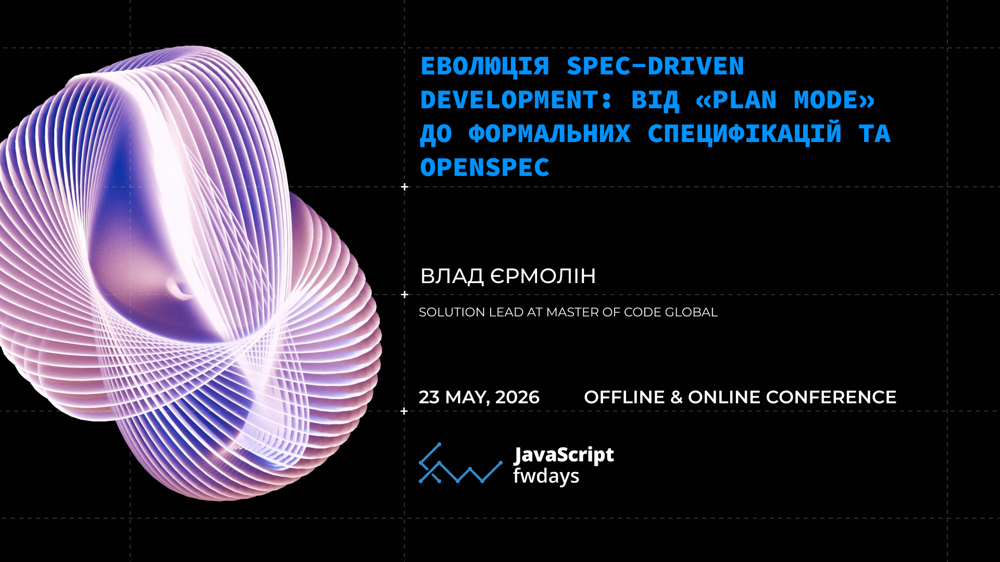
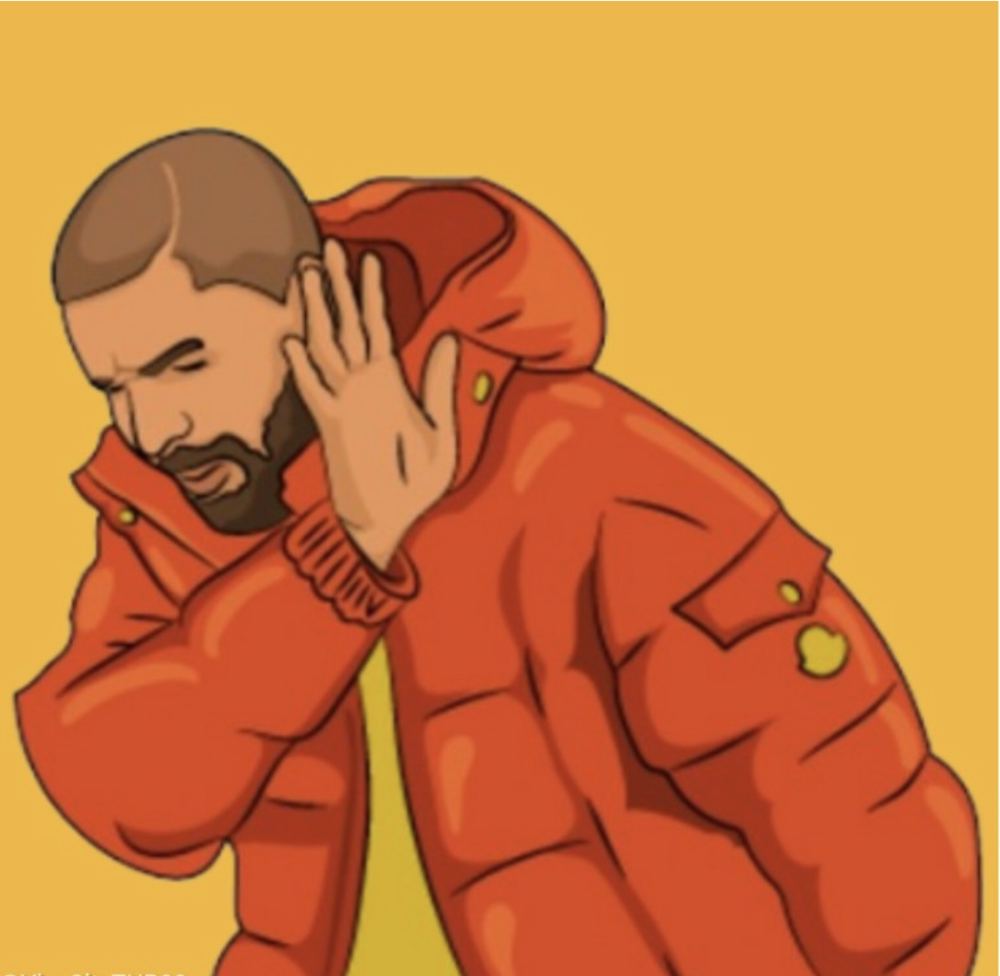
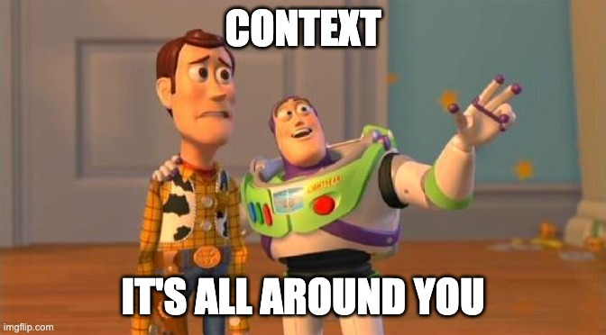
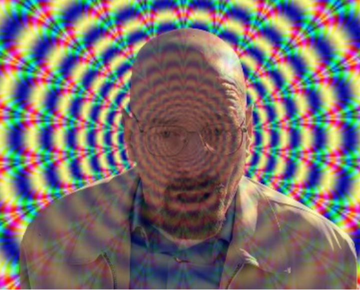
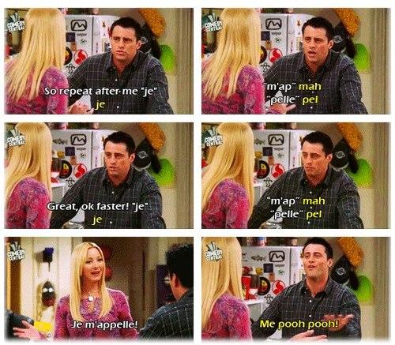
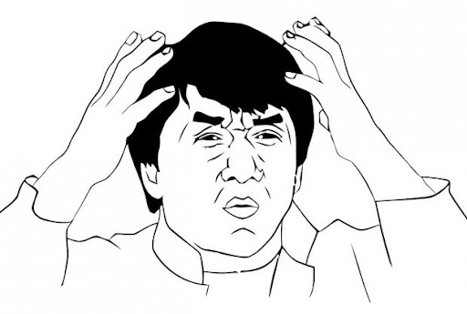

- Solution Lead @ Master of Code Global
- 6+ років у фронтенді → зараз архітектура AI-агентів
- 2 коти, йога, Київ
- GitHub/LinkedIn:
electrovladyslav - Telegram:
@dev_money_yoga
Влад Єрмолін
🧑💻 + 🤖 = ?
- 🙅♂️ Ніколи не використовував
- 😖 Пробував — не сподобалось
- 😢 Хотів би — не дозволяють
- 😻 Використовую
menti.com
2664 7911
Сьогодні IT-світ поділився на два табори

Бояться AI
Надихаються AI
menti.com
2664 7911
Нова роль розробника
Від "coder" до "spec architect"
"Я майже не пишу код сам останнім часом.
Я пишу АІ, якими спеками описати те, що я хочу отримати.
Перечитую їх, і правлю, і знов перечитую, і правлю...
І так майже всі в компанії."
menti.com
2664 7911
🧑💻 + 🤖 = ?
Проблема — у передачі контексту.

Два симптоми, що контекст не долетів

Галюцинації
API, яких не існує

Втрата контексту
довга сесія, між викликами
Чому це особливо боляче для JS/TS-розробника?
- Постійна зміна API: Next.js, Bun/Deno, нові TS features, framework churn.
- AI без контексту пише код під застарілі версії.
Counter-measure: Context7 MCP
"mcpServers": {
"context7": {
"url": "https://mcp.context7.com/mcp",
"headers": {}
}
}Context7 = контекст для бібліотек. Решта доповіді = контекст для твого проекту.
Якість коду на виході
= якість специфікації на вході.
Plan Mode · Cursor · Claude Code
Агент читає код → задає уточнення → фіксує те, що буде робити у плані → ти tune & approve.
● I have a clear picture. Before drafting the final plan, let me confirm a few direction decisions.
← □ Aesthetic □ Styling □ Scope □ Dark mode ✓ Submit →
Which aesthetic direction fits the yoga dashboard best?
1. Calm wellness (Recommended)
2. Modern minimal
3. Warm earthy
┌─ Preview ─────────────────────────────────────┐
│ Palette: │
│ bg: #F7F5F0 (warm off-white) │
│ surface: #FFFFFF │
└───────────────────────────────────────────────┘
Chat about this
Skip interview and plan immediatelyПосилюємо Plan Mode через custom skills
Plan Mode сам не витягує контекст — він припускає. Рішення: skill, що примушує агента інтерв'ювати тебе.

---
name: grill-me
description: Interview the user relentlessly about a plan or design
until reaching shared understanding, resolving each branch of the
decision tree. Use when user wants to stress-test a plan, get
grilled on their design, or mentions "grill me".
---
Interview me relentlessly about every aspect of this plan until we
reach a shared understanding. Walk down each branch of the design
tree, resolving dependencies between decisions one-by-one. For each
question, provide your recommended answer.
Ask the questions one at a time.
If a question can be answered by exploring the codebase, explore
the codebase instead.Використання Plan Mode у yoga-dashboard
PR зі змінами: #13
Коли Plan Mode не вистачає
- Не дуже зручно працювати довго (Клод — 😭 Cursor — 😏)
- План помирає із сесією 💀
- Складно описувати складну логіку

Потрібна "пам'ять" — знайомтесь, ADR
Architecture Decision Records
- Короткий markdown: context → decision → consequences
- Живе в кодовій базі:
docs/adr/ - Запускається командою
/adr-init - Генеруєш ADR і зберігаєш як контекст
- Наступна сесія → агент читає
docs/adr/→ розуміє історію рішень
Ідея 2011 року (Michael Nygard). Друга молодість — тепер не лише для людей, а й агентів.
Використання ADR у yoga-dashboard
PR зі змінами: #14
ADR: плюси і мінуси
✓ Плюси
- Легко впровадити - це просто файлики в
.claude/commands - Люди теж читають
- Може знаходити проблеми в існуючому коді
✗ Мінуси
- Немає стандартного формату — кожна команда винаходить свій
- Агент не завжди знає, коли створювати ADR
- Де source of truth: у ADR чи в коді?
GitHub Spec Kit — спробували, не зайшло
🤌 від GitHub для spec-driven development 🤌
- 🗿 Структурована ієрархія: project → epic → feature → task
- ⏰ Ми додали шаблони для естімації
- 🐍 Встановлюється через
uv - ✅ Перевіряє сам свої спеки
- На довгій дистанції важко підтримувати — документи розбігаються з кодом
OpenSpec - Y Combinator-backed startup
- 📏 Гнучкий - легко розширити своєю схемою
- 🔄 Ітеративний - основні документи архівуются в кінці фічі
- 🏗️ Для нових та існуючих проєктів
-
📦
Легко встановити —
npm install -g @fission-ai/openspec@latest -
▶️
... та запустити —
openspec init
Інсталяція
openspec init .Заповнюємо openspec/config.yaml:
schema: spec-driven
context: |
## Project
Yoga Dashboard — a Next.js 14 App Router application ...
## Tech Stack
- Framework: Next.js 14 (App Router, TypeScript strict mode) ...
rules:
proposal:
- State the problem and motivation in ≤ 3 sentences before any solution ...
tasks:
- Each task must be completable in ≤ 2 hours; split larger tasks ...Дві двері в OpenSpec
Залежно від того, наскільки ясно ти бачиш задачу.
A · Propose
Ти точно знаєш, що тобі треба зробити.
/opsx:propose \
"add weekly streak badge"→ генерує спеки:
(proposal.md, design.md, task.md...)
B · Explore
Вимоги ще не зовсім зрозумілі.
/opsx:explore \
"lets change the colors"→ спілкуєшся у вільній формі. Переходить у propose, коли ясність прийде.
Docs: commands.md#opsxexplore
Lifecycle: specs as throwaway artifacts
openspec/changes/migrate-storage-to-indexeddb/CODE changesopenspec/changes/archive/2026-05-10-migrate-storage-to-indexeddb/Тобі не потрібно підтримувати документацію вручну.
Archive — і рухаєшся далі.
Одна feature — одна папка
openspec/changes/migrate-storage-to-indexeddb/
proposal.md # чому і що змінюється
specs/ # requirements + scenarios
design.md # технічний підхід
tasks.md # implementation checklistМінімально — 4 файли, кожен з конкретною роллю.
🏛️ Далі - все йде в архів.
OpenSpec — це фреймворк, не монолит
Дефолтів достатньо на 80% задач. Решта — розширюється.
Custom skills
- Brownfield-аналіз (initial specs з existing TS)
- Testing-first flow
- Команд-специфічні: a11y-check, code review
Agent personas
- Frontend specialist (React/Next, Tailwind, a11y)
- API / backend agent (Server Actions, DB, types)
- Reviewer agent (читає PR проти acceptance)
Один OpenSpec → кілька агентів з різними personas → результат когерентний.
Docs: customization.md
Наприклад, додати Superpowers
- Додає TDD-дисципліну:
- Робить зміни в git worktree
.
├── .worktrees
│ └── migrate-storage-to-indexeddb
└── srcВикористання OpenSpec у yoga-dashboard
PR зі змінами: #16
Один decision tree, 4 відповіді
Links
- Yoga-dashboard — running example
- grill-me by Matt Pocock
- OpenSpec — github
- Superpowers
- Context7
Натхнення
Blueprint-driven development with AI and TDD
(Станіслав Долгачов, React fwdays'25)
Надшвидка розробка з AI агентами для нових проектів
(В'ячеслав Колдовський, Dou Day 2026)
Дякую · Питання?

Vlad Yermolin · fwdays'26